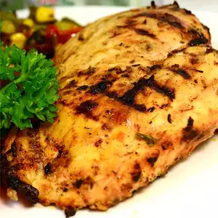

Cajun Chicken

Cajun-style grilled chicken breasts for varied meals such as Caesar salad,
sandwiches, and a dinner entree! Cajun Chicken can be served hot or cold.
Ingredients
- 2 cups vegetable oil
- 2 tablespoons Cajun seasoning
- 2 tablespoons dried Italian-style seasoning
- Garlic powder to taste
- 2 tablespoons lemon pepper
- 10 skinless, boneless chicken breast halves - pounded to 1/2 inch thickness
Steps
- In a large shallow dish, mix the oil, Cajun seasoning, Italian seasoning, garlic powder,
and lemon pepper. Place the chicken in the dish, and turn to coat with the mixture.
Cover, and refrigerate for 1/2 hour.
- Preheat the grill for high heat.
- Lightly oil the grill grate. Drain chicken, and discard marinade. Place chicken on hot grill
and cook for 6 to 8 minutes on each side, or until juices run clear.